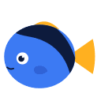
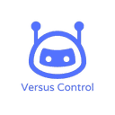

Best AI agents for site reliability and incident response (2026)
AI SRE agents and MCP servers that investigate alerts, read dashboards and CI logs, and help manage cloud infrastructure, so incidents get a first look before anyone is paged. We list 44 tools for site reliability and incident response below, each with a link-checked page, pricing as the maker states it and alternatives.
Updated
44 tools: 34 open source, 1 source-available, 1 free or freemium, 4 paid, usage-based or enterprise, 4 pricing on the maker's site.
Openrca
[ICLR'25] OpenRCA: Can Large Language Models Locate the Root Cause of Software Failures?
Added
KEVWire
Exploited vulnerabilities, critical CVEs, breaches and AI security incidents, with primary sources.
Added
PingWise
Uptime monitoring: read monitors, incidents and response times; create and change monitors.
Added
Kite
Kite is an open-source agent project that helps builders handle lightweight, modern Kubernetes dashboard.
Added
Fulling
Fulling is an open-source agent project that helps builders handle AI-powered Full-stack Engineer Agent.
Added
Uniterm
Uniterm is an open-source agent project that helps builders handle all-in-one terminal covering 30+ protocols — SSH, RDP, SFTP, databases, Kubernetes.
Added
Kubeterm
Kubeterm is an open-source agent project that helps builders handle graphical management tool for Kubernetes on desktop and mobile.
Added
CodexBar
CodexBar is an MIT-licensed macOS menu bar app, with a Linux desktop version, that keeps the usage limits of AI coding providers such as Codex and Claude Code in view, showing session, weekly and monthly windows with countdowns to each reset, credit balances, spend and live provider incident badges, so you can tell whether there is room to start a long agent task; it reuses existing local sign-ins rather than asking for a new login.
Added
Siclaw
Siclaw is an open-source agent project that helps builders handle SRE platform — read-only infrastructure diagnostics with deep investigation, security governance.
Added
Opsy
Opsy is an open-source agent project that helps builders handle your AI-Powered SRE Colleague.
Added
Uptimy
Uptimy is an MCP server that gives agents a way to handle uptime monitoring from your assistant: see what's down, run incidents, set up.
Added
OpenShip
OpenShip is an open-source, self-hostable AI-powered deployment platform with free SSL, unlimited domains, instant rollbacks and CLI/MCP support.
Added
Nightingale
Nightingale is a self-hosted alerting system with a built-in AI agent for metrics, logs, and databases
Added
OpenStatus
OpenStatus is an open-source status page and incident-response tool with an MCP server for agents
Added
DevOpsGPT
Multi-agent system that combines LLMs with DevOps tools to turn natural-language requirements into working software on existing code.
Added
Mirrord
mirrord runs a local process, including an AI agent's, as if it were a pod in your Kubernetes cluster
Added
kagent
Cloud-native framework for running AI agents on Kubernetes.
Added
Radar
Open-source Kubernetes UI with a built-in MCP server for agents.
Added
HolmesGPT
CNCF sandbox SRE agent that investigates alerts and incidents.
Added
Chaterm
Open-source AI terminal for deploying, troubleshooting and automating cloud infrastructure.
Added
Kubernetes MCP Server
MCP server for Kubernetes and OpenShift that lets agents view and manage cluster resources.
Added
Azure DevOps MCP
Microsoft's MCP server that gives AI agents access to Azure DevOps work items, repos, pipelines and more, local or hosted.
Added
Stakpak
Open-source DevOps agent that runs on your machines 24/7 to deploy and keep your apps running, pinging a human only when needed.
Added
OpenChoreo
OpenChoreo is an internal developer platform for Kubernetes with AI agents and CI/CD
Added
Terravision
Cloud architecture diagrams in both directions: AI prompt or JSON to diagram, diagram to Terraform via MCP server, and Terraform to diagram via CLI or CI/CD. Using Official AWS, Azure and GCP icons
Added

Dory
Dory is the complete local development system for Apple Silicon: Docker, Compose, Kubernetes, virtual machines, and policy-bound agent sandboxes
Added
Terraform MCP Server
HashiCorp's Terraform MCP server for looking up providers and modules and automating workflows.
Added
Duckle
Open-source ETL/ELT you deploy on your own servers or cloud. Built on DuckDB: no-code/low-code visual pipelines or SQL, 385 components, dbt, CDC, data quality, reverse ETL, lineage, MCP for AI agents.
Added
Ongrid
An ops agent that learns your infrastructure, finds the root cause of incidents and helps fix them from the chat apps your team already uses.
Added
Dark Moon
Open-source autonomous AI penetration testing. 50 specialist agents across web, API, cloud, Active Directory, Kubernetes, CI/CD and AI/LLM (OWASP LLM Top 10).
Added

Versus Incident
The self-hosted AI SRE agent. You don't have to monitor your systems alone. It helps an agent inspect infrastructure, incidents, or delivery pipelines.
Added
MCP Gateway
MCP Gateway is a reverse proxy and management layer for MCP servers, enabling scalable, session-aware stateful routing and lifecycle management of MCP servers in Kubernetes environments
Added
K8m
、 Mini Kubernetes AI Dashboard， + +MCP( )， 、 、 ， ， 。. It helps an agent inspect infrastructure, incidents, or delivery pipelines.
Added
Devopness
Devopness is an AI DevOps agent that deploys apps, infrastructure, and CI/CD through one MCP server
Added
Cleric
AI SRE agent that investigates production alerts and finds root causes.
Added
OneUptime MCP
OneUptime's official MCP server, giving agents access to monitors, incidents, on-call and status pages in this open-source observability platform. Free plan, paid plans from $22 per user, or self-host.
Added
Raven
Host agent that plans complex jobs as task graphs and coordinates built-in and third-party agents for research, coding, design and on-call work.
Added
Grafana MCP
Grafana's MCP server giving agents access to dashboards, data sources and incidents.
Added
Buildkite MCP
Buildkite's MCP server exposing pipelines, builds, jobs and logs to coding agents.
Added
UptimeRobot MCP
UptimeRobot's MCP server for creating monitors, triaging incidents and querying uptime stats for sites, APIs and servers.
Added
Nestack Agent Care
Nestack Agent Care is a managed operations service for production AI agents, covering monitoring, evals, guardrails, human review, incident response and cost and drift control.
Added
OVHcloud MCP
OVHcloud's official remote MCP server for managing OVHcloud infrastructure, services and account from AI agents.
Added
Restack
Platform for designing, testing and running reliable agents at enterprise scale on Kubernetes.
Added
wren-guard Pro
wren-guard Pro is a TypeScript guard library for AI agents that hold or move funds on Base and other EVM chains (viem, CDP AgentKit, Privy, Eliza and similar stacks). It enforces allowlisted, capped and simulated sends, decodes calldata and signatures to flag unlimited approvals, Permit, Permit2, setApprovalForAll and EIP-7702 delegation, screens for injected instructions and watches nonces. It ships with an 89-scenario attack corpus drawn from public agent wallet incidents and a GitHub Action that fails CI if your agent's policy would let a known attack through. The original Python wren-guard is free and MIT licensed.
Added
GitHub repos (38)
| Repo | GitHub stars | Licence | Last push |
|---|---|---|---|
| 23,105 | — | — | |
| 15,217 | — | — | |
| 13,417 | — | 2026-10-29 | |
| 9,240 | — | 2026-10-28 | |
| 7,770 | — | 2026-10-30 | |
| 5,970 | Apache 2.0 plus an extra clause that bars directly competing with DevOpsGPT and KuafuAI services | 2026-10-04 | |
| 5,914 | — | 2026-10-30 | |
| 5,393 | — | 2026-10-30 | |
| 4,126 | Apache License 2.0 | 2026-10-30 | |
| 3,988 | Apache License 2.0 | 2026-10-29 | |
| 3,731 | Apache License 2.0 | 2026-10-29 | |
| 3,627 | Apache License 2.0 | 2026-10-30 | |
| 3,191 | — | — | |
| 3,103 | GNU GPL v3.0 | 2026-10-26 | |
| Fulling ↗ | 2,445 | — | — |
Top 15 of 38 by stars. Stars and licence come from each repo, checked when the listing was last verified.
Browse these categories
Related tasks
Popular with
Tools are matched to tasks by category, use cases and what each tool says it does. Missing one? Submit it free.